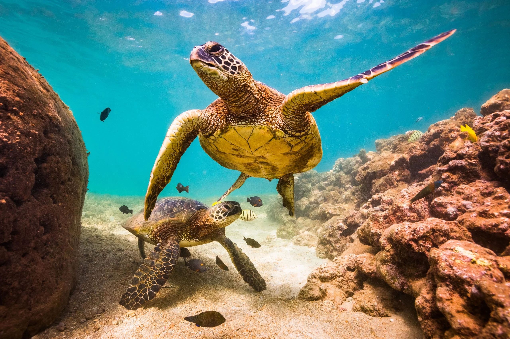
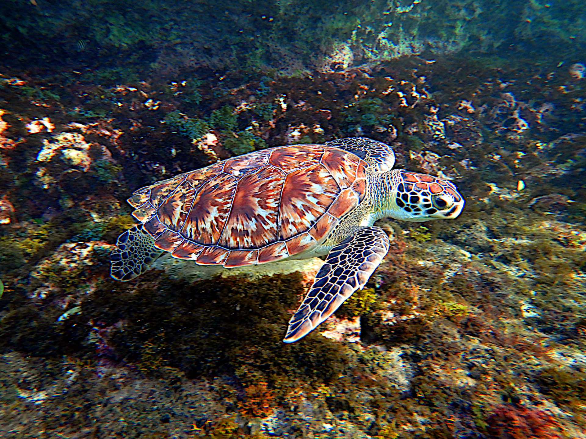
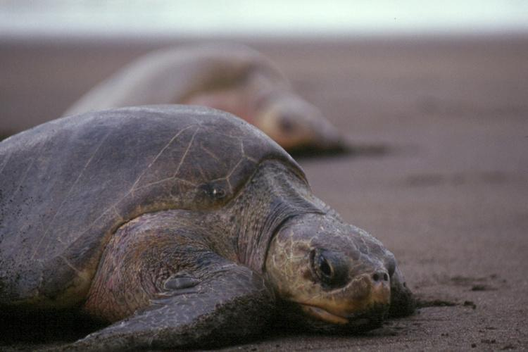

Types of Turtles In Srilanka
- Green turtle
- Hawksbill turtle
- Leatherback turtle
- Loggerhead turtle
- Olive Ridley turtles
- Parker's black turtle
- Srilanka black turtle
- Flapshell turtle
Green turtles
The Green turtle (Chelonia mydas) is the most frequent turtle found in Sri Lanka and one of the largest known marine turtles. It is distinguished by its flattened body covered by a tear-shaped shell of blackish grey color, a smaller head than the loggerhead turtle, and a pair of huge paddle-like flippers. The adult turtle is relatively large, averaging between 68 and 190 kg, with some species weighing up to 315 kg. It receives its name from the green color fat found in the layers beneath its shell. They are found primarily in tropical ocean waters, where they graze solely on marine vegetation such as algae and sea grass before returning to the beach to lay eggs.
Hawksbill turtle
The World Conservation Union has listed the hawksbill turtle (Eretmochelys imbricata) as critically endangered due to poaching for its beautiful, commercially valuable "tortoise-shell," human consumption of tortoise flesh and eggs, and the reptile becoming entangled in fishing gear. Its most notable characteristic is the thick scutes that make up its hard top shell. Its look is dark golden brown with reddish orange streaks. The Hawksbill turtle is tiny to medium in size, with an elongated head that tapers into a pointed hawk-like beak. Its habitat is mostly coral reefs and shallow lagoons, and it eats sponges, fish, sea anemones, and jellyfish among other things.
Leatherback turtle

The Leatherback Sea turtle (Dermochelys coriacea) is regarded as the fourth-heaviest contemporary reptile and the biggest extant turtle. It may be identified by its big, teardrop-shaped body that is a massive shade of grayish-black and is coated in skin and greasy flesh, as well as by the seven distinct ridges that run along its body from front to back. The leatherback sea turtle may reach heights of up to seven feet (two meters) and can weigh over two thousand pounds (900 kilograms). It can swim swiftly through the water thanks to its hydrodynamic body structure and a sizable pair of front flippers since it mostly feeds on jellyfish and other tiny marine invertebrates.
Loggerhead turtle

The Caretta caretta, also known as the loggerhead sea turtle, has a head that is comparatively big, a reddish brown color, and a top shell that is slightly heart-shaped. A healthy adult measures around three feet long and weighs about 113 kilograms (250 pounds).These marine reptiles are mostly found in saline water, often hundreds of miles out at sea, as well as in estuary settings including bays, lagoons, and salt marshes, with females briefly coming onshore for breeding. Being carnivores, they mostly eat marine invertebrates, especially crabs with hard shells, which they eat with their mighty jaws. The lifetime of the loggerhead sea turtle is estimated to reach 50 years.
Olive Ridley turtles
Olive Ridley (The Lepidochelys olivacea) sea turtle is a species that lives in the warm Indian Ocean seas. It is a very little creature with an upper exoskeleton in the form of a black heart that matures to an olive green color. It weighs little more than 50 kilograms and measures 60 to 70 cm on average in length. The Olive Ridley sea turtle, noted for being the one that is most frequently encountered, is known for arriving on land in huge numbers at once known as "arribada" in order to lay their eggs. The Olive Ridley has a lifetime of 50 years and mostly consumes jellyfish, shrimp, mollusks, and fish.
Parker's black turtle

The lowlands of the world are home to this turtle species, which is also indigenous to western Thailand, western Bangladesh, Myanmar, Nepal, and India. This South Asian turtle has three recognized subspecies: M. t. trijuga, M.They may be found in most marshes and rivers, including the city of Colombo. The lake in Kandy and the little tank inside the Udawattekele Sanctuary still have them. They were in Koslanda, 756 meters above sea level, when they were last seen by anyone.
Srilankan black turtle

Broadly distributed in lowland wet and dry zones up to a height of around 4200 ft asl. Omnivorous and scavenger in nature, both subspecies. It lives in calm waters where there are aquatic plants, spends a lot of time in the sun during the day, and hunts at night.
Flapshell turtles

A species of turtle belonging to the softshell turtle family is called the Sri Lankan Flapshell Turtle, or Lissemys ceylonensis. IUCN lists them as vulnerable, and it references appendix ii. Sexual reproduction occurs in them.About thirty years ago, these turtles were quite widespread in almost all of the lowlands' water bodies. However, poaching has reduced their numbers in locations outside of protected zones. They were frequently seen at the lake in Kandy in the early 1970s, with the more prevalent Parker's Black Turtles.